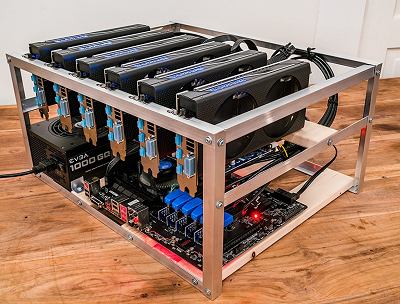
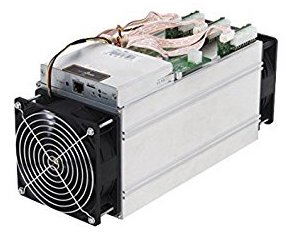

Basically, when you're mining you are using specially designed hardware and software. Both of which are publicly available to the average person.
GPU Based Mining
Since mining is just doing mathematical calculations you can just use any kind of processing unit. Whether that is a CPU (Central Processing Unit), a GPU (Graphics Processing Unit) or a specially designed chip called an ASIC (Application Specific Integrated Circuit).
Before everyone was hyped about bitcoin there were fewer people mining so the algorithms were easier, so all people needed was a simple computer with a consumer grade CPU and an average GPU. Slowly, as more and more people knew about cryptocurrencies they also wanted to be miners. As a result, the algorithms because tougher and tougher to solve, so people began experimenting with different pieces of hardware. They discovered that the graphics processing unit or GPU for short was very good for this sort of repeated math. It suited this environment well because it uses more electricity and in turn emits more heat. Nowadays, miners use anywhere from 6 to 60 GPUs, the reason for using this many is to go algorithms faster. Consequently, GPU prices have skyrocketed over the months as miners have been snagging them off the shelves.
This is a specially built computer called a mining rig. The 6 black boxes up top are called the all important GPUs. This rig uses off the shelf hardware that is available to everyone.
ASIC Based Mining
As mentioned earlier, the amount of miners on the network grow exponentially, so it’s important to keep up the with them, and continue making money, so engineers developed the ASIC miner. ASIC stands for, Application Specific Integrated Circuit, it’s similar to a CPU, but it is built ground up for mining cryptocurrencies. It’s different compared to a GPU because it was made specifically for solving hash functions this makes it better for mining bitcoin as it uses less power and has a faster hash rate.
This is an Antminer S9, an ASIC miner popular among mining enthusiasts.
ASIC mining rigs have a smaller size because instead of a full computer setup (which the GPU mining setup requires), it is a compact box. Also, since it doesn’t require a full computer setup it is easier to setup and use. The only thing that you will need is a power supply, which usually comes with the unit and an ethernet cable with a connection. These types of rigs are comparatively cheaper as you only need to buy an ASIC miner, which usually costs around $1000-$2000, and not a full computer with a CPU, motherboard and other components. As they are usually cheaper and have a faster hashrate they have a high return on investment.
Cloud based Mining
Cloud based mining can be a great option for miners as they don’t have to build a full computer or buy anything physical. This solution could be appealing to people who live in studio apartments and don’t much space to designate to a full computer or even a couple ASIC mining rigs. Companies like Genesis Ming and HashFlare charge you according to the hash rate (the speed at which your computer can perform the algorithms) that you buy. Depending on the company that you sign up with you might need to pay a maintenance fee. Sometimes, the companies might require you to sign a year long locked contract. This is good for the company as it ensure a guaranteed income even if the currency drops. However, it’s bad for the consumer because you run the rick of the currency dropping and you losing money.
Pooled Mining
Since now more and more people are joining the bitcoin network its harder for miners to solve the problems that are getting more and more difficult so they worked together and invented a concept called pooled mining. This is when a group of miners work on a problem and get awarded equally. Sometimes you have to pay to join a group like this.